S53 — तारे टिमटिमाते क्यों हैं?
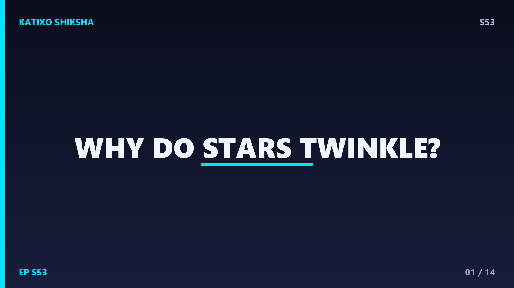
Slide 1दोस्तों, रात के आसमान में देखो तो तारे चमकते-झपकते से लगते हैं, जैसे कोई उन्हें on-off कर रहा हो। पर क्या तारे सचमुच blink करते हैं? आज Katixo KhojLab पर हम इसी मज़ेदार सवाल का जवाब ढूंढेंगे। इसका असली scientific नाम है stellar scintillation। और सबसे चौंकाने वाली बात — तारों का टिमटिमाना खुद तारों की वजह से नहीं होता! इसके पीछे का असली culprit बैठा है हमारे ही घर में, यानी Earth के atmosphere में। चलो दोस्तों, इस रहस्य को step by step खोलते हैं और समझते हैं असली science।
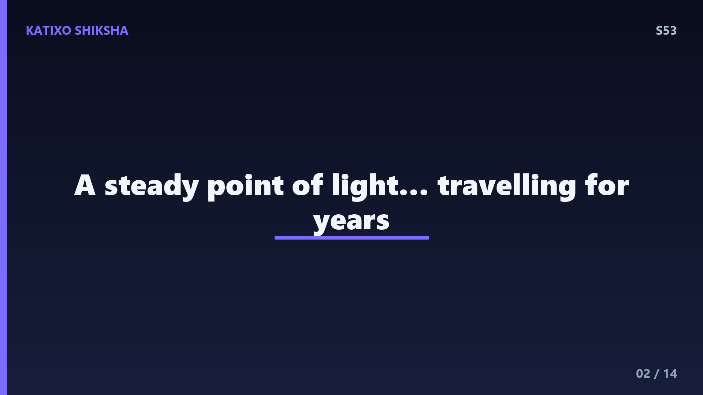
Slide 2पहले समझो तारा है क्या। तारा एक बहुत बड़ा, गरम gas का गोला है जो light-years दूर है। हमारा सबसे नज़दीकी तारा, Sun को छोड़कर, Proxima Centauri लगभग 4.2 light-years दूर है। इतनी भयानक दूरी की वजह से तारे की रोशनी हम तक एक बहुत पतली, सीधी किरण के रूप में पहुँचती है। space में, atmosphere से बाहर, यह रोशनी बिल्कुल steady रहती है — कोई flicker नहीं, कोई झपकी नहीं। यानी तारा अपनी जगह शांति से जल रहा है। तो फिर ज़मीन से वो डगमगाता हुआ क्यों दिखता है? जवाब है उसके आखिरी सफर में।
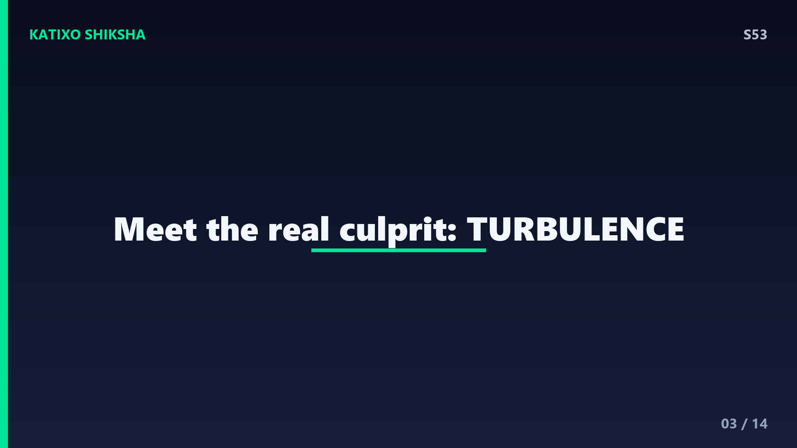
Slide 3रोशनी का असली drama तब शुरू होता है जब वो किरण Earth के atmosphere में घुसती है। हमारा atmosphere एक shaant, एक जैसा कंबल नहीं है दोस्तों। यह हवा की अलग-अलग परतों, यानी layers से बना है। कुछ परतें गरम हैं, कुछ ठंडी; कुछ घनी यानी dense हैं, कुछ हल्की। और ये परतें हर पल हिलती-डुलती, मिक्स होती रहती हैं। इसी हलचल को कहते हैं turbulence। यही turbulence असली खिलाड़ी है। जब steady starlight इन बदलती परतों से गुज़रती है, तो उसका रास्ता थोड़ा-थोड़ा टेढ़ा होने लगता है। और यहीं से जन्म लेता है twinkle।
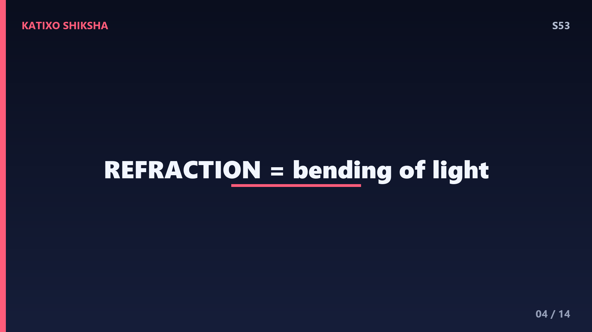
Slide 4अब key concept समझो — refraction, यानी रोशनी का मुड़ना। जब light एक माध्यम से दूसरे अलग density वाले माध्यम में जाती है, तो वो अपना रास्ता थोड़ा bend कर लेती है। पानी में डाली पेंसिल टूटी हुई क्यों दिखती है? यही refraction है। atmosphere की हर layer की density अलग है, तो starlight हर layer पर थोड़ा-थोड़ा मुड़ती है। चूँकि layers लगातार हिल रही हैं, यह bending भी हर pal बदलती रहती है। नतीजा — रोशनी का path एक जगह टिकता नहीं, बल्कि wobble करता है, हल्का सा इधर-उधर डगमगाता है।
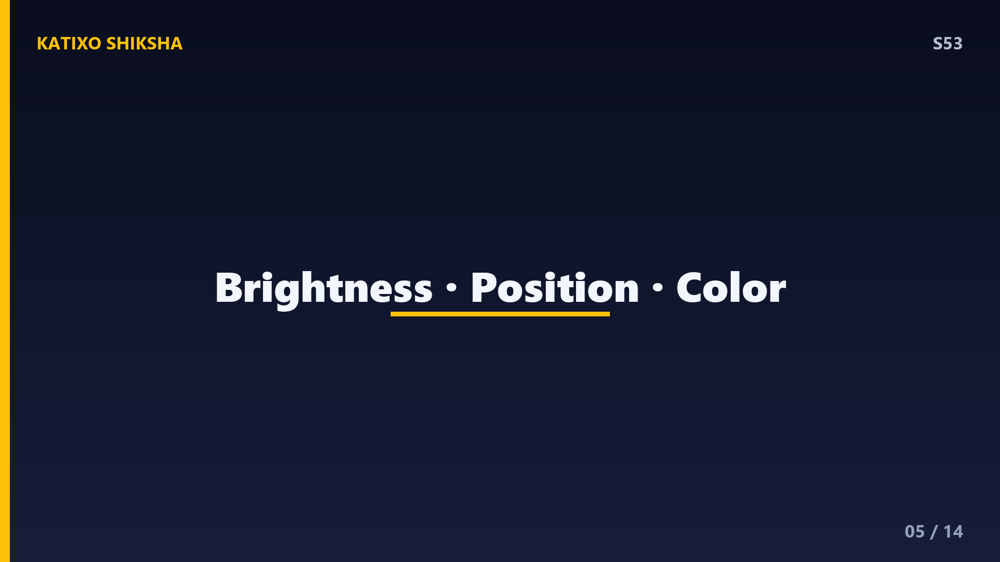
Slide 5इस wobble का सीधा असर तीन चीज़ों पर पड़ता है, दोस्तों। पहला — brightness। किरण कभी थोड़ी ज़्यादा focus होकर आती है, कभी फैल जाती है, तो तारा कभी bright कभी dim दिखता है। दूसरा — position। तारा अपनी असली जगह से ज़रा सा खिसका हुआ, हिलता सा लगता है। तीसरा — color। अलग-अलग रंग, यानी wavelengths, थोड़ी अलग मात्रा में मुड़ते हैं, इसलिए चमकीले तारे कभी लाल, कभी नीले से झलकते हैं। यही तीनों मिलकर बनाते हैं वो खूबसूरत twinkle effect जो हम रात में देखते हैं।
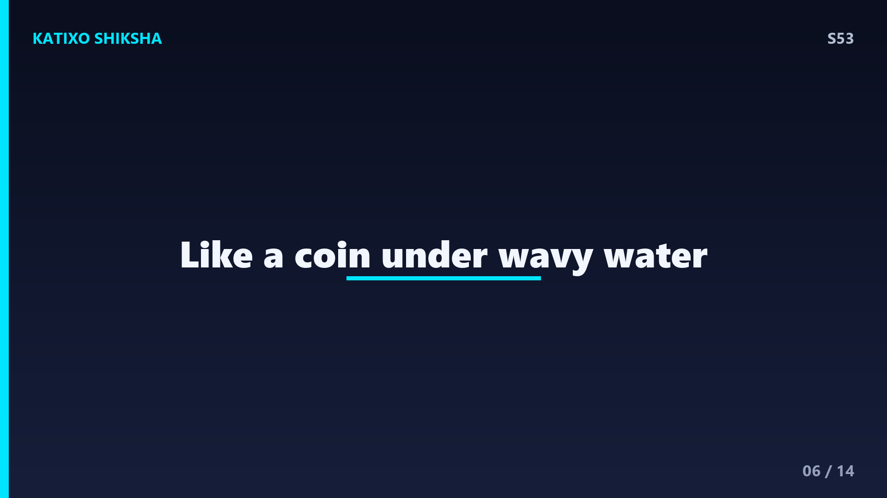
Slide 6अब एक बढ़िया analogy से पूरी बात पक्की कर लो। सोचो एक swimming pool के तल पर एक coin पड़ा है, और पानी की सतह पर हल्की-हल्की लहरें चल रही हैं। ऊपर से देखो तो वो coin हिलता हुआ, चमकता हुआ, टेढ़ा-मेढ़ा दिखता है, है ना? coin तो स्थिर है, हिल तो रही है पानी की लहरें, जो light को बदल-बदल कर मोड़ रही हैं। बिल्कुल यही हो रहा है आसमान में। coin है तारा, और हिलता पानी है हमारा turbulent atmosphere। तारा steady है, पर हवा की लहरें उसकी रोशनी को नचा रही हैं।
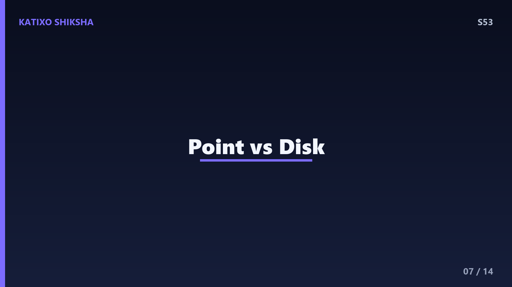
Slide 7अब सबसे interesting twist, दोस्तों। तारे तो twinkle करते हैं, पर planets ज़्यादा नहीं करते! क्यों? क्योंकि तारे इतने दूर हैं कि वो एक point source यानी एक नन्हे बिंदु जैसे दिखते हैं। एक single point की रोशनी जब wobble करती है तो वो साफ़ नज़र आता है। लेकिन Mars, Jupiter, Venus जैसे planets हमारे बहुत पास हैं, तो वो एक नन्ही disk यानी छोटी थाली की तरह दिखते हैं, भले ही नंगी आँख को बिंदु लगें। उस disk पर बहुत सारे points होते हैं।
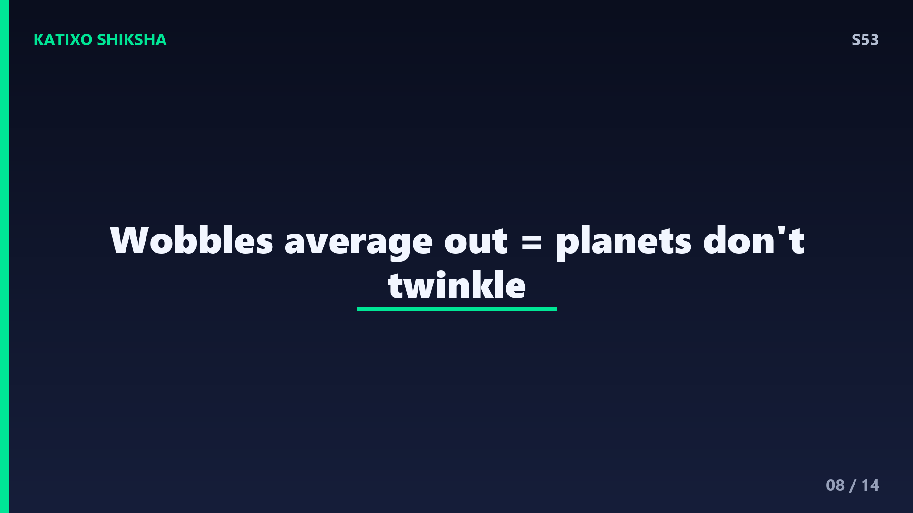
Slide 8अब magic यह है — disk के उन सारे points का wobble अलग-अलग directions में होता है, और वो आपस में average out हो जाता है, यानी एक-दूसरे को cancel कर देता है। इसलिए planet की रोशनी ज़्यादातर steady, ठहरी हुई दिखती है। तो यह आपके लिए एक शानदार sky trick है, दोस्तों — अगर आसमान में कोई चीज़ तेज़ी से twinkle कर रही है, वो शायद तारा है। और अगर कोई चमकीली चीज़ शांति से, बिना झपके स्थिर जल रही है, तो ज़्यादा chance है कि वो एक planet है। next time आसमान देखो तो test करना!
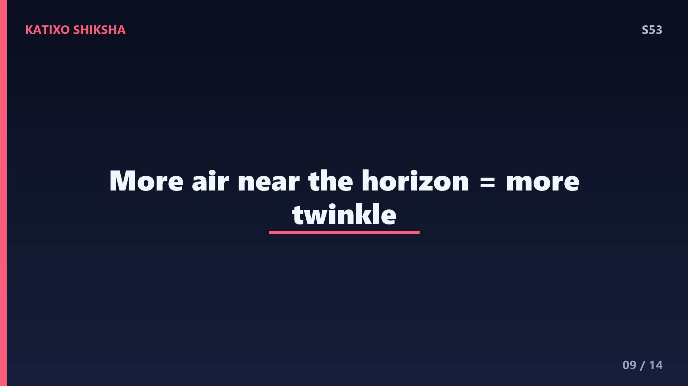
Slide 9एक और मज़ेदार observation — तारे horizon के पास, यानी आसमान के किनारे पर, सिर के ठीक ऊपर वाले तारों से कहीं ज़्यादा twinkle करते हैं। इसका reason बहुत simple है, दोस्तों। जब तुम सीधे ऊपर देखते हो, तो starlight को atmosphere की सबसे पतली मोटाई से गुज़रना पड़ता है। लेकिन horizon के पास, रोशनी को atmosphere की एक लंबी, तिरछी मोटाई पार करनी पड़ती है — कई गुना ज़्यादा हवा। ज़्यादा हवा का मतलब ज़्यादा layers, ज़्यादा turbulence, ज़्यादा refraction। इसलिए किनारे के तारे जमकर नाचते हैं, और कभी-कभी रंग भी बदलते दिखते हैं।
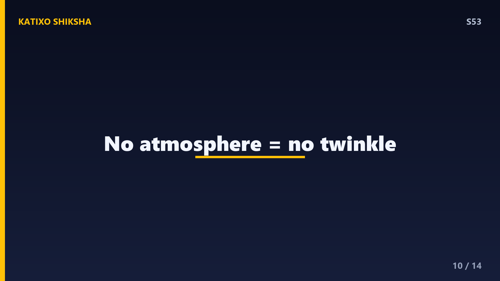
Slide 10तो असली मुजरिम साफ़ है — atmosphere। इसका proof? जो astronauts space में हैं, atmosphere से ऊपर, उन्हें तारे बिल्कुल twinkle नहीं करते दिखते — वो steady, साफ़ बिंदु जैसे चमकते हैं। इसीलिए वैज्ञानिकों ने Hubble Space Telescope को atmosphere के बाहर, space में भेजा। वहाँ कोई turbulent हवा नहीं है रोशनी को मोड़ने के लिए, तो Hubble की तस्वीरें इतनी razor-sharp और crisp आती हैं। यह इस बात का पक्का सबूत है कि twinkle तारों का नहीं, बल्कि हमारी हवा का खेल है।
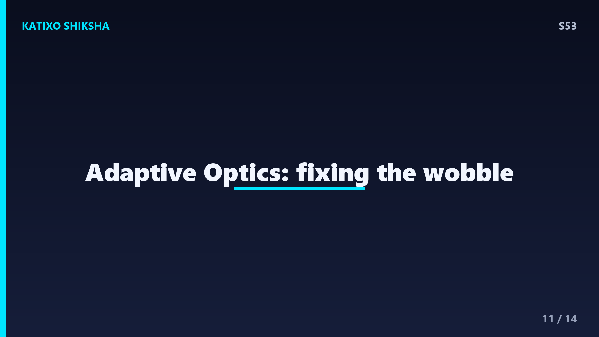
Slide 11अब ज़मीन पर बैठे बड़े telescopes का क्या? वो तो atmosphere के नीचे ही फँसे हैं। इसका भी जुगाड़ है, दोस्तों, और यह technology कमाल की है — इसे कहते हैं adaptive optics। telescope में एक खास deformable mirror लगा होता है, यानी एक ऐसा शीशा जिसका shape हज़ारों बार प्रति second बदल सकता है। computer पल-पल मापता है कि atmosphere रोशनी को कितना मोड़ रहा है, और फिर mirror को ठीक उल्टा मोड़कर उस wobble को cancel कर देता है। इससे ज़मीन के telescopes भी लगभग space जैसी sharp तस्वीरें खींच पाते हैं। science की असली जादूगरी!
Slide 12Quick brain check, दोस्तों! अब देखते हैं तुमने कितना ध्यान दिया। तीन सवाल हैं, और थोड़ी देर video को pause करके सोचना। सवाल एक — तारों के twinkle यानी scintillation का असली कारण क्या है, खुद तारा या कुछ और? सवाल दो — तारे twinkle करते हैं पर planets ज़्यादा क्यों नहीं करते, इसका मुख्य reason बताओ? और सवाल तीन — ज़मीन के telescopes atmosphere की हलचल को cancel करने के लिए कौन सी technology इस्तेमाल करते हैं? चलो, अभी pause करो, दिमाग पर ज़ोर डालो, फिर answers के लिए वापस आना!
Slide 13तो चलो answers देखें, दोस्तों! पहला जवाब — twinkle का कारण तारा नहीं, बल्कि Earth का atmosphere है, जिसकी हिलती हुई हवा की layers starlight को refract यानी मोड़ती हैं। दूसरा जवाब — तारे point source की तरह दिखते हैं तो उनका wobble साफ़ दिखता है, जबकि planets छोटी disk की तरह दिखते हैं और उनके points का wobble average out होकर cancel हो जाता है, इसलिए वो steady रहते हैं। और तीसरा जवाब — ज़मीन के telescopes adaptive optics और deformable mirror का इस्तेमाल करके उस wobble को ठीक करते हैं। कितने सही हुए?
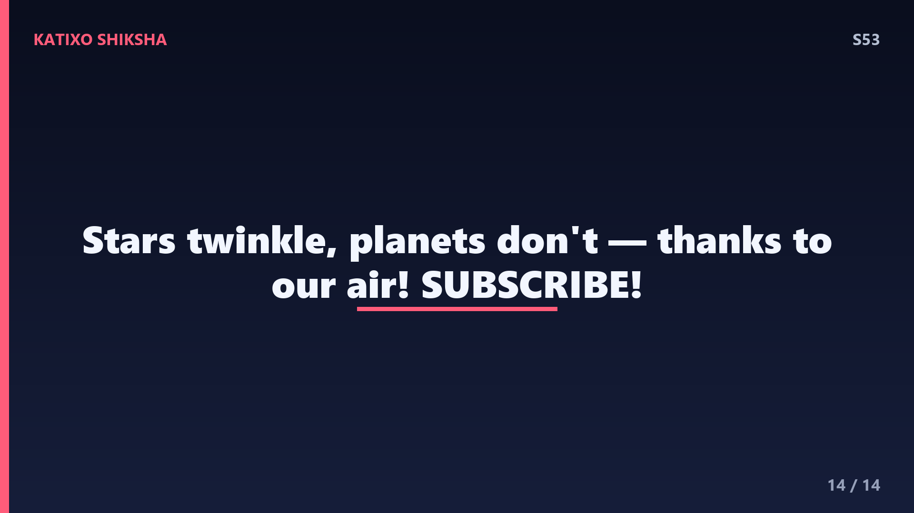
Slide 14तो दोस्तों, आज हमने सीखा — तारों का twinkle यानी stellar scintillation असल में तारों का नहीं, हमारे atmosphere का खेल है। हिलती हवा की layers starlight को refract करके उसकी brightness, position और color को डगमगा देती हैं। तारे point होने से नाचते हैं, planets disk होने से steady रहते हैं, horizon पर twinkle ज़्यादा होता है, और space से या adaptive optics से यह wobble खत्म हो जाता है। अगली बार आसमान देखो तो याद रखना — वो steady रोशनी शायद एक planet है! अगर मज़ा आया तो like करो, और Subscribe करना मत भूलना! Bye!